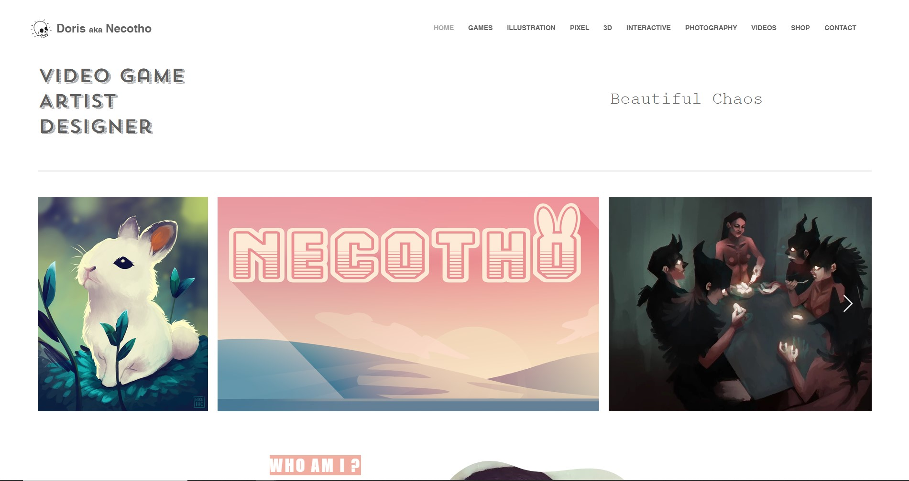
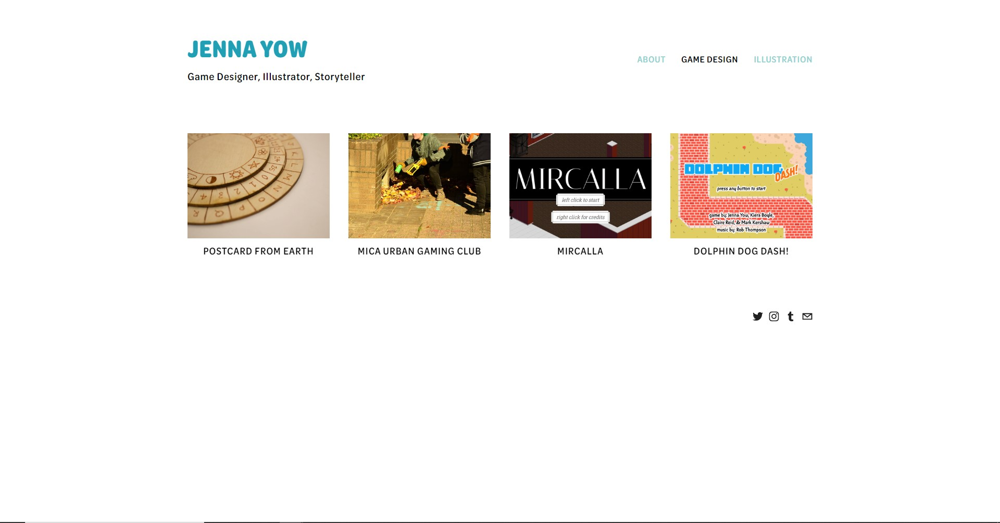
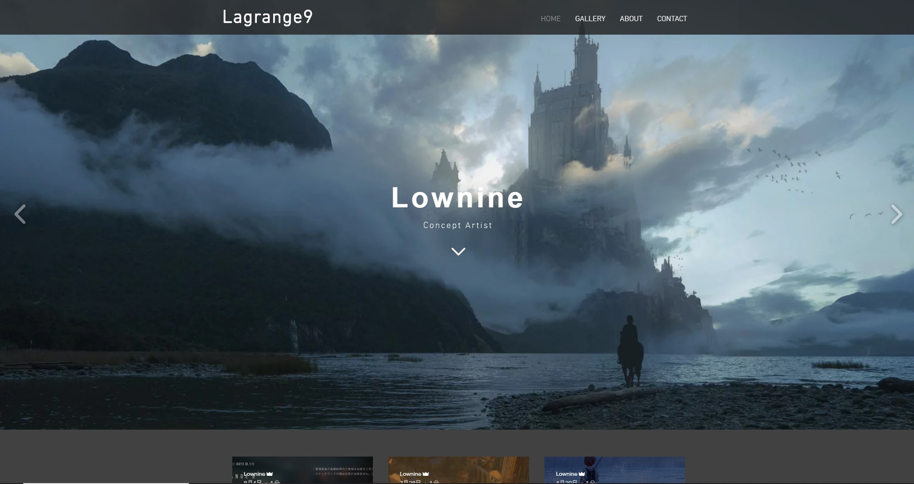
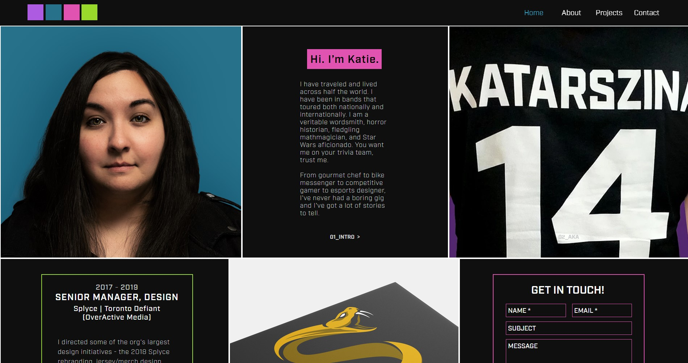
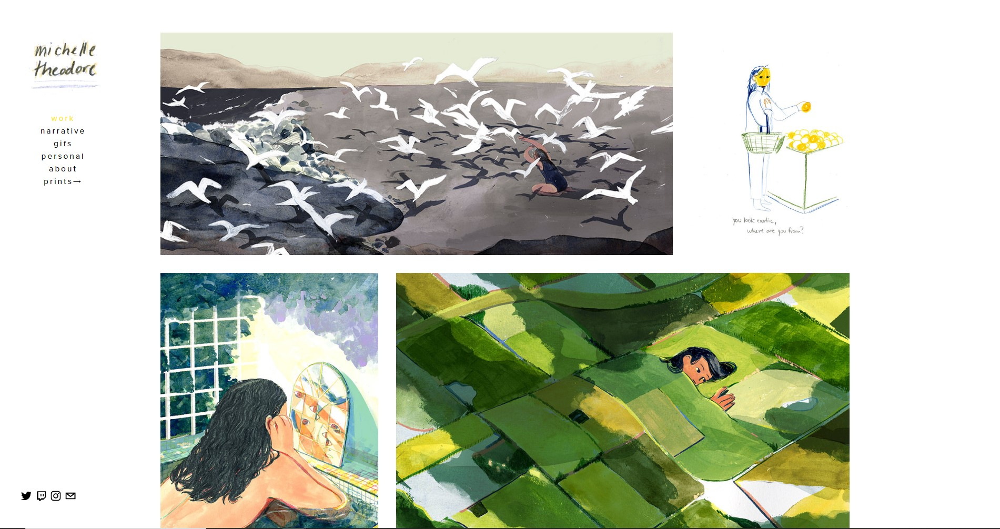

Peter Parker
AVT-217-004
Fall 2019
Doris Caracosa
Doris Carracosa is a game artist currently working at Chucklefish. Specifically the site hierarchy of her portfolio is something that is well done and something I want to create similarly in my own portfolio. The tabs of the website serve as the main navigational tools of the site. The first tab is dedicated to games she worked on, the key thing being here is that she was not the sole creator of these projects. So for each game she listed her roles. Then, each of the other tabs are other types of work that aren't explicitly game projects - illustration, 3D, photography, etc - all of which she is the sole creator of. This is a really good way to delineate things by *how* you have participated in them, which makes your impact on a project much more clear to whoever is viewing your portfolio.
Jenna Yow
Jenna Yow is an illustrator and game designer. Her portfolio is structured similarly to Carracosa's with the delineation of its tabs between mediums of work, then within those tabs projects and contributions to those projects. Jenna's portfolio is more stylizaed that Carracosa's, utilizing a non-monotone color palette and webfonts.
Ronin/Lownine
Ronin/Lownine is a Japanese concept artist and illustrator. Their portfolio is able to best showcase their work through a rolling slideshow on the home/landing page, and a borderless tiled image layout on the gallery page. Images can then be clicked on and expanded to get a closer look. The font and color scheme of the website also heighten the sullen tone that often inhabits concept art, especially Ronin's.
Katie Valdivia
Katie Valdivia is an esports graphic and branding designer. Her portfolio is definitely one of the more unique that I've seen. The landing/home page provides a lot of information very easily by displaying it graphically along with the given text. It is organized into segmented sections, each following a color in the vibrant color scheme. It's able to maintain consistency but also able to give each section its own flair. The About/Projects/Contact page provides more indepth explanations of what is first presented on the landing page, and does so in a much more linear manner. This is necessary (and works well) because of the amount of information that needs to be conveyed. Each paragraph section is paired with interactible images that don't get in the way of other elements on the page. An amazing portfolio website all around!
Michelle Theodore
Michelle Theodore is a Canadian illustrator. Her portfolio is structured similarly to Carracosa's and Yow's, but with the navigation on the side instead of the top. She has also delineated her navigation by purpose of illustration, rather than medium, since she doesnt need to specify her contribution to the work because all the work is solely hers.